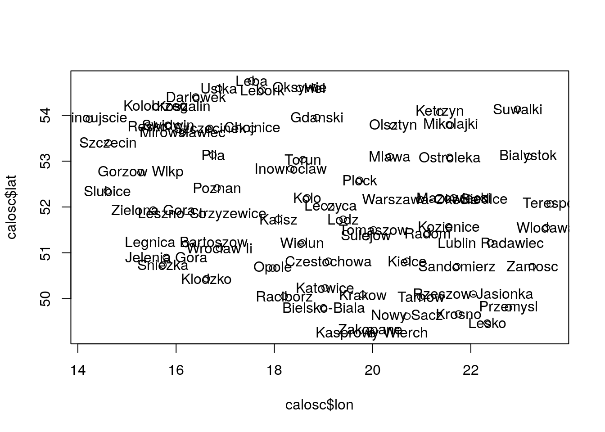
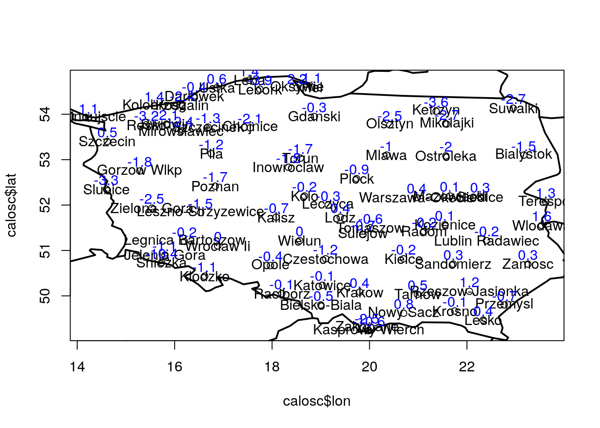

Rozdział 8 dplyr - część I
Wiele operacji wykonywanych na ramkach danych ma bardzo podobną strukturę. Bardzo często zbiory danych łączymy, filtrujemy, rozdzielamy, grupujemy, obliczamy wybrane statystyki i wizualizujemy w poszukiwaniu istoty problemu. Wiele z tych operacji wykonywanych na ramkach danych można wykorzystać za pomocą natywnie dostępnych funkcji R. Można także skorzystać z kilku-, kilkunastu pakietów bardzo popularnych wśród analityków danych, które skracają czas obliczeń o 80% i pozwalają na zawarcie istoty problemu w zaledwie kilku liniach kodu…
Jedną z najczęściej wykorzystywanych bibliotek do analizy danych jest biblioteka dplyr (Wickham and Francois 2016), która w dużym stopniu zrewolucjonizowała analizę danych w środowisku R. Poniżej zostanie przedstawionych kilka praktycznych przykładów związanych z wykorzystaniem wybranych funkcji z tego pakietu.
Pakiet dplyr nie jest dostępny w domyślnym środowisku R, stąd też wymagana jest jego wcześniejsza, jednorazowa instalacja oraz aktywacja.
8.1 Łączenie ramek danych - left_join()
Do połączenia dwóch ramek danych na podstawie wspólnego identyfikatora można użyć natywnie dostępnej w R funkcji merge() lub skorzystać z jednej z odmian funkcji join dostępnej w bibliotece dplyr. Najczęściej stosowana komenda to left_join(), która zwraca wszystkie elementy z pierwszej ramki danych oraz wszystkie kolumny z obu łączonych ramek danych.
Spójrzmy na schemat działania tej funkcji na podstawie poniższego przykładu z dwiema ramkami danych zawierających
df1 <- data.frame(id_stacji = c(1:4,3), pomiar1 = c(2.5,1.25,2,3,2))
df2 <- data.frame(id_stacji = c(1, 3, 5), pomiar2 = c(10.2,9.6, 12.3), inne = letters[1:3])
print(df1)## id_stacji pomiar1
## 1 1 2.50
## 2 2 1.25
## 3 3 2.00
## 4 4 3.00
## 5 3 2.00print(df2)## id_stacji pomiar2 inne
## 1 1 10.2 a
## 2 3 9.6 b
## 3 5 12.3 cJeśli chcemy złączyć obie ramki danych: df1 oraz df2 na podstawie kolumny id_stacji najszybciej wynik działania dostaniemy działając funkcją left_join():
library(dplyr)
left_join(df1,df2)## Joining, by = "id_stacji"## id_stacji pomiar1 pomiar2 inne
## 1 1 2.50 10.2 a
## 2 2 1.25 NA <NA>
## 3 3 2.00 9.6 b
## 4 4 3.00 NA <NA>
## 5 3 2.00 9.6 bJak widać na powyższym przykładzie funkcja domyślnie poszukała kolumny w obu zbiorach danych o takiej samej nazwie i na tej podstawie dokonała złączenia. Jednocześnie identyfikatory stacji, które nie istniały w drugiej ramce danych zostały uzupełnione jako braki danych (NA). Jeśli chcielibyśmy uzyskać inne możliwe kombinacje możemy zastosować inne warianty rodziny funkcji join opisanej w systemie pomocy R
Brak wspólnej nazwy kolumny łączącej
Funkcja left_join() domyślnie szuka wspólnych nazw kolumn na podstawie których łączy dwie ramki danych. Jeśli nazwy kolumn po których chcemy dokonać złączenia są różne możemy:
- odpowiednio wcześniej zunifikować te nazwy (np. za pomocą
colnames()) - lub wskazać funkcji
left_join()argumentby=z kolumnami po których chcemy złączać
W celu sprawdzenia takiego schematu postępowania pobierz dane z adresu http://enwo.pl/przetwarzanie/dane/przyklad1_join.Rdata i załaduj do środowiska R. W zakładce Environment powinny pojawić się 2 nowe obiekty:
xym- zawiera współrzędne geograficzne, wysokości stacji, międzynarodowe kody stacji i nazwy stacji meteorologicznychwynik- zawiera podsumowanie dobowe dla temperatury maksymalnej, minimalnej i średniej wg depesz SYNOP z godz. 6:00 UTC
load("/home/bartosz/github/przetwarzanie/dane/przyklad1_join.Rdata")
head(xym)## lon lat alt code name
## 1 27.95000 55.81667 133 26554 Verhnedvinsk
## 2 27.46667 55.36667 131 26643 Sarcovschina
## 3 26.31667 55.05000 209 26645 Lyntupy
## 4 28.76667 55.46667 133 26653 Polock
## 5 27.75000 54.88333 197 26657 Dokshitsy
## 6 28.70000 54.88333 174 26659 Lepelhead(wynik)## stacja tmax tmin tavg
## 1 Kolobrzeg 6.3 1.4 3.8
## 2 Koszalin 6.6 -2.4 2.1
## 3 Ustka 5.3 0.6 3.6
## 4 Leba 6.1 1.4 3.4
## 5 Darlowek 6.5 -0.4 2.5
## 6 Lebork 6.3 -3.9 1.7Jak widzimy wspólnym polem w obu zbiorach danych są nazwy stacji zawarte w polach: name oraz stacja. Jeśli potraktujemy zbiór wynik jako podstawowy do którego chcemy dołączyć współrzędne geograficzne i kod WMO stacji wówczas samo wpisanie komendy left_join(xym, wynik) powinno dać błąd. Konieczne jest wskazanie nazw kolumn w zbiorze pierwszym i odpowiadającej mu nazwy kolumny w zbiorze drugim w dość nieintuicyjnej składni argumentu by= :
calosc <- left_join(wynik, xym, by = c("stacja" = "name"))## Warning: Column `stacja`/`name` joining factors with different levels,
## coercing to character vectorhead(calosc)## stacja tmax tmin tavg lon lat alt code
## 1 Kolobrzeg 6.3 1.4 3.8 15.58333 54.18333 3 12100
## 2 Koszalin 6.6 -2.4 2.1 16.15000 54.20000 32 12105
## 3 Ustka 5.3 0.6 3.6 16.86667 54.58333 6 12115
## 4 Leba 6.1 1.4 3.4 17.53333 54.75000 2 12120
## 5 Darlowek 6.5 -0.4 2.5 16.40000 54.40000 2 12124
## 6 Lebork 6.3 -3.9 1.7 17.75000 54.55000 17 12125Często po złączeniu dwóch ramek danych nasz nowy zbiór zawiera braki. Jeśli chcemy się ich pozbyć możemy użyć funkcji na.omit(), która usunie wszystkie rzędy z wartościami NA.
calosc <- na.omit(calosc)W ten sposób nasza baza danych powinna zawierać tylko poprawne wartości. Możemy w szybki sposób zwizualizować nasz zbiór danych za pomocą wcześniej poznanej funkcji plot, gdzie jako współrzędnej x i y podamy wartości odpowiednio długości (lon) i szerokości geograficznej (lat). Możemy także dodać dowolną informację w postaci tekstowej, np. temperaturę minimalną za pomocą funkcji text(). Działa ona analogicznie jak funkcja plot() przy czym konieczne jest podanie dodatkowego argumentu labels=, który ma być wyświetlony we wskazanych koordynatach. Jeśli chcemy wyświetlić dodatkowo nazwy stacji wówczas możemy zastosować zarówno poniższy kod:
plot(x = calosc$lon, y = calosc$lat); text(x = calosc$lon, y = calosc$lat, labels=calosc$stacja)
- Można dodatkowo dodać fragment kodu, który doda kontury krajów. Jeśli nie mamy nigdzie w pobliżu odpowiednio przygotowanej warstwy w postaci pliku GISowego, możemy wykorzystać pakiet
mapdata, w którym znajdują się podstawowe dane z granicami administracyjnymi dla całego świata:
#install.packages("mapdata") # jesli chcemy uzyc po raz pierwszy musimy ja zainstalowac
library(mapdata) # aktywacja pakietu
plot(x = calosc$lon, y = calosc$lat)
text(x = calosc$lon, y = calosc$lat, labels=calosc$stacja) # rysujemy to co wczesniej
map("world", add=TRUE, lwd=2) # wazne aby ustawic opcje 'add'; reszta parametrow jak dla funkcji plot()
text(x = calosc$lon, y = calosc$lat+0.2, labels=calosc$tmin, col="blue") # dodajmy jeszcze np. temp. min nieco powyzej etykiet
8.1.1 Łączenie danych po dacie
W katalogu http://enwo.pl/przetwarzanie/dane/opady/ znajdują się pliki do dzisiejszego ćwiczenia. Zawierają one dobowe sumy opadów atmosferycznych z kilku wybranych polskich stacji. Każdy z plików ma taką samą strukturę zawierającą w kolejnych kolumnach: numer stacji, nazwę stacji, datę oraz sumę opadu. Wartości są rozdzielone znakami tabulacji, a miejsca dziesiętne są oddzielone kropkami.
## "V1" "V2" "V3" "V4"
## 249180120 "SKOCZÓW" 19501101 2.1
## 249180120 "SKOCZÓW" 19501105 2.1
## 249180120 "SKOCZÓW" 19501107 2.9
## 249180120 "SKOCZÓW" 19501108 0.5
## 249180120 "SKOCZÓW" 19501111 0.6
## 249180120 "SKOCZÓW" 19501114 12.6
## 249180120 "SKOCZÓW" 19501115 12.3
## 249180120 "SKOCZÓW" 19501116 0.6
## 249180120 "SKOCZÓW" 19501117 0.4Zwróć uwagę, że pliki zawierają informację jedynie o dniach, w których wystąpiły opady na danej stacji (jeśli opadu w danym dniu nie było wówczas jest on pominięty). Naszym celem będzie utworzenie jednolitej, pełnej bazy, ze wszystkimi datami w zakresie występujących dat (bez względu na to czy padało), a wartości opadów dla każdej kolejnej stacji będą umieszczane w kolejnych kolumnach, jak na poniższym schemacie:
## daty brenna chalupki cieszyn
## 1 1951-01-01 NA 12.2 7.8
## 2 1951-01-02 NA 4.8 9.6
## 3 1951-01-03 0.1 0.5 4.3
## 4 1951-01-04 0.5 0.9 7.1
## 5 1951-01-05 5.2 NA 4.0
## 6 1951-01-06 12.9 NA 3.3Dla wielu osób pracujących dotychczas w arkuszach kalkulacyjnych taka postać bazy danych jest najbardziej intuicyjna w obsłudze.
Zanim przystąpisz do tworzenia bazy danych utwórz katalog opady (np. na pulpicie) i zapisz do niego pliki znajdujące się pod adresem http://enwo.pl/przetwarzanie/dane/opady. Następnie ustaw katalog roboczy RStudio aby pliki były dostępne bez konieczności wpisywania pełnej ścieżki.
W poniższej tabeli wypisano nazwy stacji oraz liczbę wierszy w każdym z plików. Dlaczego nie możemy połączyć plików od razu do postaci macierzy / ramki danych za pomocą komendy cbind() / cbind.data.frame()?
## 1603 BRENNA.
## 1198 CHALUPKI.
## 1198 CHAŁUPKI.
## 2053 CIESZYN.
## 1270 GOCZALKOWICE-ZDROJ.
## 1270 GOCZAŁKOWICE-ZDRÓJ.
## 1921 ISTEBNA-MLODAGORA.
## 1921 ISTEBNA-MŁODAGÓRA.
## 1947 ISTEBNA-STECOWKA.
## 1947 ISTEBNA-STECÓWKA.
## 1492 JAWISZOWICE.
## 1717 RUDZICA.
## 1763 SKOCZOW.
## 1763 SKOCZÓW.
## 1493 SZCZYRK.
## 1233 TRZEMESNIA.
## 1233 TRZEMEŚNIA.
## 1856 USTROŃ-RÓWNICA-WIEŚ.
## 1856 USTRON.
## 2032 WAPIENICA.
## 1237 WARSZOWICE.
## 1817 WISŁA-CENTRUM.
## 1268 WISLA-GLEBCE.
## 1268 WISŁA-GŁĘBCE.
## 695 WISŁAWIELKA.
## 39051Do połączenia 2 ramek danych na podstawie wspólnego identyfikatora można użyć natywnie dostępnej w R funkcji merge() lub skorzystać z pakietu plyr, który oferuje nieco bardziej wydajny algorytm łączenia baz danych. W celu przetestowania jego funkcjonalności niezbędne będzie wykonanie poniższych kroków:
- Stwórz obiekt
dataz datami od 1. stycznia 1950 r. do 31. grudnia 1960 r. - Stwórz ramkę danych
wynikz jedną kolumną nazwanądata, w której będą przechowywane wartości dat (z poprzedniego punktu). - Wczytaj pierwszy (dowolny) plik z danymi opadowymi i nazwij go
dane. Za pomocą funkcjicolnames()nazwij w intuicyjny sposób kolumny (np.: “id”,“stacja”,“data”,“opad”). - Kolumnę zawierającą datę przekonwertuj do klasy
Date, aby komputer nie miał problemów ze zrozumieniem, że wartości w tej kolumnie przechowują czas a nie wartości liczbowe. - Złącz wynikową ramkę danych z wczytanym plikiem za pomoca funkcji
left_join()z pakietudplyr. - Ponów kroki 3-5 wczytując kolejny plik do istniejącej wynikowej ramki danych
Zadanie domowe
Po opanowaniu złączania ramek danych kontynuuj treść poleceń 1-6 poprzez stworzenie pętli for, która będzie wczytywać kolejne pliki z danymi opadowymi oraz dopisywać do wynikowej ramki danych. Finalny wynik zapisz do pliku arkuszu kalkulacyjnego z rozszerzeniem .xls.